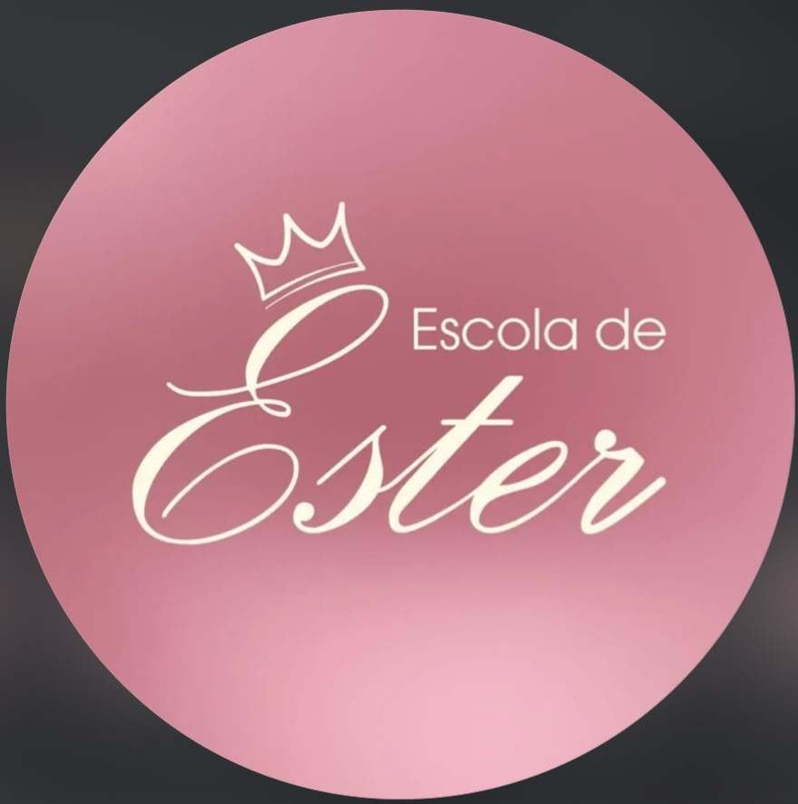
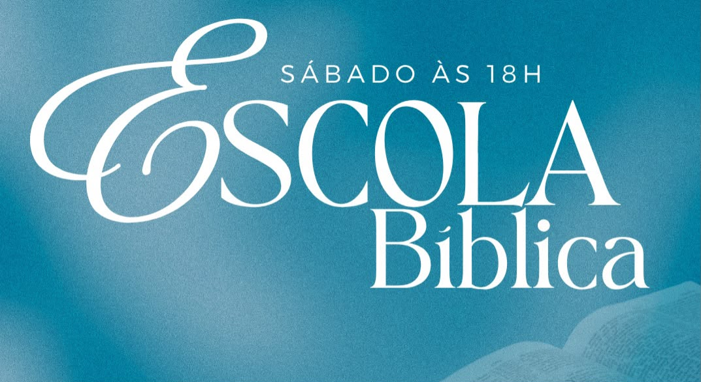

📚 Nossas Escolas
📌 Uma importante informação
A Escola de Ester e a Escola Sacerdócio Real não são ministérios exclusivos da Igreja Quadrangular Família Global. Trata-se de um movimento interdenominacional, cuja visão nasceu em Joinville/SC e hoje está presente em mais de 200 escolas espalhadas por todo o Brasil.
Aqui em Curitiba, a QFG sente-se honrada e abençoada em ceder espaço e servir ao Reino do Senhor, acolhendo e participando ativamente desse grande trabalho que une irmãos de diferentes igrejas na edificação da Palavra e na formação de vidas.
Somos apenas parte de algo muito maior: a obra de Deus que atravessa fronteiras e une corações em um só propósito! ❤️
Escola Sacerdócio Real
Voltada para o ensino da Palavra e o aperfeiçoamento da vida espiritual, capacitando cada filho de Deus a exercer com excelência o seu sacerdócio, conforme a Palavra que diz: "Mas vós sois a geração eleita, o sacerdócio real, a nação santa, o povo adquirido, para que anuncieis as virtudes daquele que vos chamou das trevas para a sua maravilhosa luz".

Escola Ester
Ministério voltado para as mulheres, com o propósito de fortalecer a identidade feminina em Cristo, preparando e capacitando para viverem com propósito, dignidade e fé, assim como Ester, que foi levantada para um tempo e para um propósito específico nas mãos de Deus.

Escola Bíblica
Oportunidade para todos conhecerem profundamente a Palavra de Deus, crescerem na fé e serem edificados através do estudo sistemático das Escrituras, formando uma base sólida para uma caminhada firme e alicerçada em Jesus Cristo.